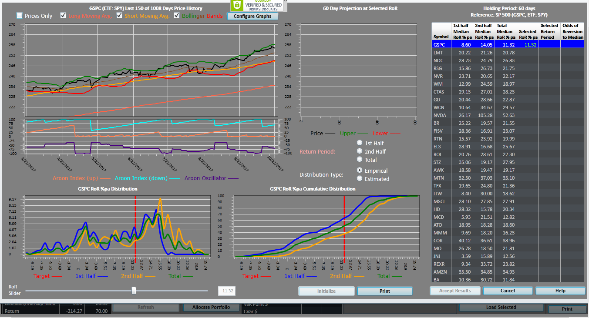

|
<< Click to Display Table of Contents >> Forecast Assistance Wizard Overview |
  
|
|
<< Click to Display Table of Contents >> Forecast Assistance Wizard Overview |
|

This screen has five information components for each security selected from the table on the right side of this screen:
1.a technical indicators chart on the upper left that displays the long and short moving averages, Bollinger Bands and Aroon Index for aa user selected time period;
2.the forward looking holding period to the immediate right of the technical indicators display;
3.a probability graph of the annualized holding period returns for each of three time periods- the total reference period, the 1st half of the reference period and last half of the reference period;
4.a cumulative probability graph of the annualized holding period returns;
5.a table that lists the selected securities together with the historical holding period return averages over the total, first and second half and the reference period and three additional columns that show, for each selected security, the user specified annualized holding period return for each security and for each security the historical based odds the specified holding period return will revert to its median together with a arrow to indicate the direction of return movement
In addition, this display enables the user to (a) select which time period on which to focus, e.g. the second half of the reference period, and (b) display the probability and cumulative probability distributions of return in terms of their historical frequencies or in terms of their estimated log-normal representation.